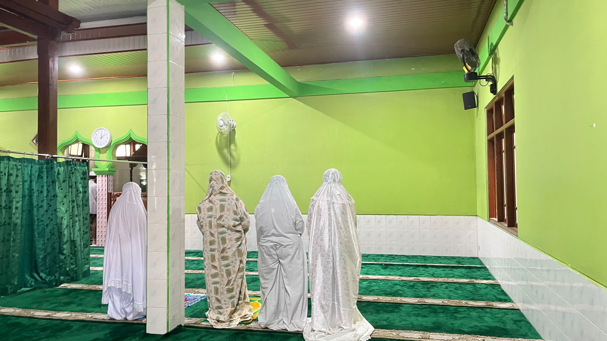
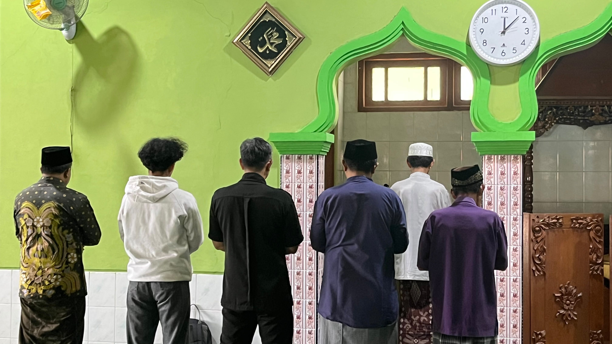

Salat Berjamaah
Masjid Asy-Syarqowi juga rutin menjalankan salat berjamaah pada setiap harinya.
| Hari | Imsak | Subuh | Terbit | Dhuha | Dzuhur | Ashar | Maghrib | Isya |
|---|---|---|---|---|---|---|---|---|
| Senin | 03:37 | 03:47 | 05:03 | 05:31 | 11:25 | 14:43 | 17:39 | 18:52 |
| Selasa | 03:37 | 03:47 | 05:03 | 05:31 | 11:25 | 14:43 | 17:39 | 18:52 |
| Rabu | 03:37 | 03:47 | 05:03 | 05:31 | 11:25 | 14:43 | 17:39 | 18:52 |
| Kamis | 03:37 | 03:47 | 05:03 | 05:31 | 11:25 | 14:43 | 17:39 | 18:52 |
| Jumat | 03:37 | 03:47 | 05:03 | 05:31 | 11:25 | 14:43 | 17:39 | 18:52 |
| Sabtu | 03:37 | 03:47 | 05:03 | 05:31 | 11:25 | 14:43 | 17:39 | 18:52 |
| Minggu | 03:37 | 03:47 | 05:03 | 05:31 | 11:25 | 14:43 | 17:39 | 18:52 |

